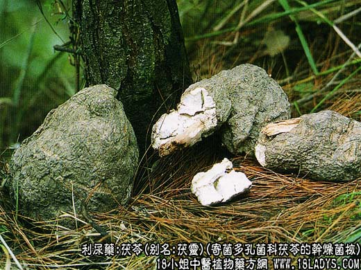
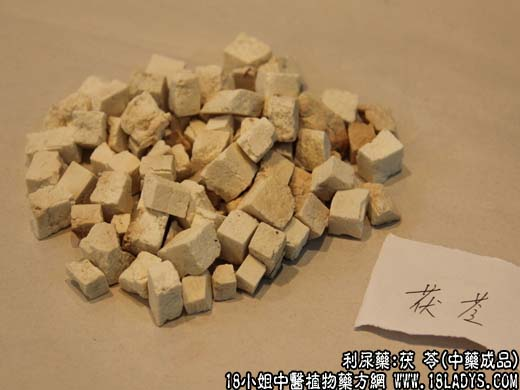
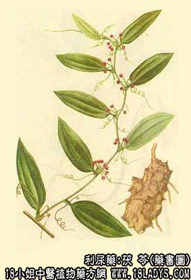

茯苓为常用中药，《神农本草经》列为上品。
别名：茯灵。
来源：为寄菌多孔菌科茯苓的干燥菌核。野生者多寄生于赤松或生真马尾松的根部。大量商品均匀人工栽培，寄生为埋于地下的赤松或马尾松的枝干。地上无菌苗。
产地：主产于云南省的丽江、兰坪、维西、剑川、楚雄。安徽省的金寨、霍山、岳西、太湖。湖北省的英山、罗田、麻城。河南省的商城、固始、新县。广西自治区的梧州地区。此外浙江、广东、湖南、江苏、福建、江西均有生产。华北、西北、东北等地亦有分布。
性状鉴别：市售商品分个苓（皮苓）、白苓片、白苓块、赤苓块、茯神块、白碎块、赤碎块、茯神木、茯苓皮，分别叙述如下：
个茯苓：（皮苓）呈不规则的球形或块状，大小不一，重量由数克至数公斤不等。表面棕色至棕黑色。外皮薄而粗糙，有明显的皱纹或凹沟。体质坚重。不易破碎。断面不平坦，呈颗粒状显棱角。有的具裂隙，或中间有松根通过。断面周边淡棕色，内部白色，个别也有淡棕色者。质细腻，气无淡味，嚼之粘牙。
以云南野生品质最好，又名云苓，体质坚重外皮坚皱，棕黑发亮，断面牙白色，坚结细腻，嚼之粘牙力强。
白苓片：为个苓去净外皮，挑选白净细腻坚实的苓肉切成的薄片，厚约一毫米，平面长宽均在三厘米以上，（带赤色者称赤苓片）。
白苓块：为个苓上净外皮，挑选白净细腻坚实的苓肉切民的较厚扁平方块，厚约3~4毫米，长宽约3~4厘米，边沿切不成方形的长宽在1.5厘米以上者也包括在内。
赤苓块：形状与白苓块相同唯苓肉颜色带有赤色或黄色。
茯神块：形状与白苓块相同，不分颜色，唯每块上面必须含有细松根一段，松根直径最粗不超过1.5厘米，厚度和苓块相同，木质轻松泡朽。
白碎块：为加工白苓片，白苓块时剩下的边角碎块，呈碎块状，颜色白净。
赤碎苓：形状与白碎苓相同，唯颜色多带赤黄。
茯神木：为外围生过茯苓的较粗的松根，长短不一，一般约在30厘米为下，直径约2.5厘米以下，多弯不直，似朽木，黄棕黄或褐色，质轻松而不显树皮层，外围必须带有天然附生的部分茯苓肉。
茯苓皮：为生产苓片，苓块时剖下的外皮，呈薄片块状，大小不一，表皮棕色，内壁附有赤白色苓肉，质柔软。
主要成分：含茯苓糖、茯苓酸、蛋白质、脂肪、卵磷脂、组胺酸、胆硷、麦角甾醇和钾盐等。
功效与作用：1、利尿。动物实验证实有利尿作用，但不及木通、猪苓。
2、滋养。中医认为茯苓有补性，能健脾补中，可能与其所含营养物质的作用有关。
3、镇静。茯苓的镇静作用虽不及茯神，这仍可用于镇静安神。
炮制：生用。
性味：甘、平。
归经：入心、脾、胃、肺、肾经。
功能：利水渗湿，益脾宁心。
主治：气虚劳伤，水肿，痰饮，呕吐，腹泻，遗精，热淋，惊悸，健忘等症。
临床应用：1、用于治疗水肿、小便不利，取其有利尿作用。治疗一般的水肿胀满，对偏于寒或兼有脾胃虚弱的较适宜，可配泽泻、猪苓加强利尿作用。兼有阳虚表现者，再加配桂枝或肉桂以通阳（即旺盛血液循环功能。凡在利水剂中加入桂枝或肉桂，都是为了促进血液循环而加强利尿，也就是所谓“行气化水”、“气行水行”的意思），方如五苓散，适宜程度较轻的水肿。实验证明五苓散有较强的种尿作用，能使排出的尿量增加112%
2、用于治疗痰饮。前人的经验是“痰饮必用茯苓”。取其有利尿和补益脾胃作用。一般可用苓桂术甘汤为主方。痰饮在胃（上腹胀满、胃部有振水音、呕吐清水痰涎，如慢性胃炎），则加半夏、生姜，或用茯苓饮；痰饮在肺（咳嗽、痰多沫、呼吸不畅，如慢支气管炎、支气管扩张），则加配陈皮、半夏、川贝。
3、用于健脾化湿，治疗脾胃虚弱引起的消化不良，上腹胀满，食欲减少，以及脾虚泄泻等。其作用一是滋养调中；二是利尿渗湿，肠道水分因而减少，使稀溏的大便变稠。凡胃阳虚（约相当于消化功能不足）者，都可用茯苓，但需配党参，也就是前人经验所说“茯苓能通胃阳”、“胃阳虚者，参茯必进”。总之，平素有食欲不振，消化不良，食后或吐或泻，都可用茯苓，并配其它健脾理气药，方如参苓白术散。如属急性消化不良所致的腹泻，则配苍术，银花。
4、用于镇静安神。凡有惊悸、失眠，可用茯苓配酸枣仁、远志、柏子仁、五味子等，如补心丹（成药）。
用量：用于健脾益胃或一般利尿渗湿者，9~18g；如湿重有显著浮肿，用量可加大至30~45g。最大量使用至60~90g,但不宜长期大量服用。
处方举例：1、五苓散（《伤寒论》）：茯苓18g，猪苓9g，泽泻6g，白术9g，桂枝6g，水煎服。
2、茯苓饮（《外台秘要》）：茯苓9g，白术9g，党参6g，生姜4.5g，枳实6g，陈皮4.5g，水煎服。
3、参苓白术散（《局方》）：党参12g，茯苓9g，白术9g，陈皮4.5g，莲肉9g，淮山药12g，苡米9g，扁豆9g，春砂仁3g，甘草3g，水煎服。
注：1、茯苓皮。功能不消肿，多用于治疗皮肤水肿。
其性味与茯苓相同，但专于利尿，无补性。常用于治疗较症水肿（如病后体弱所见的面目和四肢肿满），代表方为五皮散（《中藏经》）。处方：茯苓皮15g，大腹皮9g，桑白皮9g，生姜皮6g，陈皮6g，水煎服。注意：如用带皮茯苓，处方上应写“带皮苓”。带皮苓为利水作用为主，健脾作用较次，用于治一般不肿而稍重者。
2、茯神。功能宁心安神，多用于治心宁，惊悸健忘。
其性味与茯苓相同，但长于镇静安神。动物实验已证实茯神有中等程度镇静作用，但不及酸枣仁，临床两者常配伍同用，方如养心汤。处方：茯神9g，茯苓9g，黄芪15g，当归9g，川芎4.5g，法半夏6g，柏子仁6g，远志3g，党参9g，肉桂末3g（冲），炙甘草6g，水煎服。
3、茯神木。治诸筋挛缩，痹痛，中风口眼斜，心悸健忘。
4、茯苓。茯神拌朱砂使用，称朱茯苓，朱茯神，用以增加镇心安神的功能。但朱砂不溶于水，应改为冲服为宜。
赤茯苓：性味与白茯苓相同，但补性较差，故补剂中一般不用赤茯苓而用白茯苓。赤茯苓主要作用为清利湿热，故五淋汤用之配赤芍、栀子等治热淋、血淋（例如表现有热象和血尿的急性尿道炎、膀胱炎，泌尿系结石）。